Statistical Inference
Modified from Dr. Purna Gamage ANLY-511 slides
What are we covering today?
- Large Random Samples (Chapter 6)
- Law of Large Numbers
- The Central Limit Theorem
- Estimation
- Maximum Likelihood Estimators
- Method of Moments
- Unbiased Estimators
- Efficiency
Large Random Samples
What Is the Law of Large Numbers?
- The law of large numbers, in probability and statistics, states that as a sample size grows, its mean gets closer to the average of the whole population.
- In the 16th century, mathematician Gerolama Cardano recognized the Law of Large Numbers but never proved it.
- In 1713, Swiss mathematician Jakob Bernoulli proved this theorem in his book, Ars Conjectandi.
- It was later refined by other noted mathematicians, such as Pafnuty Chebyshev, founder of the St. Petersburg mathematical school. https://www.investopedia.com/terms/l/lawoflargenumbers.asp
Statistical convergence
- Statistical convergence involves the tendency of a sequence of random variables to stabilize in distribution as the sample size increases, indicating a likelihood of approaching a limiting behavior in a probabilistic sense rather than pointwise certainty.
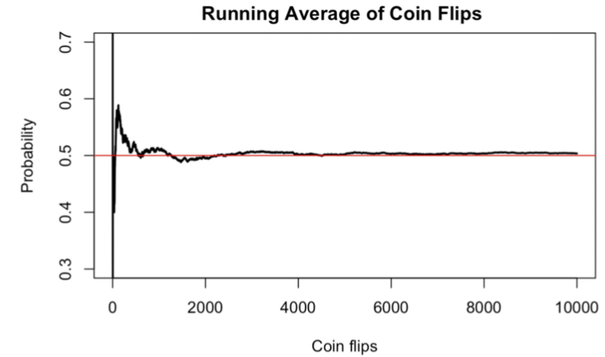
Good visual resource: https://seeing-theory.brown.edu/basic-probability/index.html#section1
Quote
“The Law of Large Numbers has nothing whatever to do with growth. What it actually says is that as a large number of samples of a random variable are taken from a population, the mean of the samples approaches the expected value of the population. In other (and simplified) terms, the larger your sample the better your estimate of the actual value… the basis of all sampling, polling, and inferential statistics…
“So what do we call the principle that the growth rate of things tends to slow as they get larger? The idea is kind of obvious, which may be why it doesn’t have a name [so] I propose we call it the logistic principle.”
- Steve Wildstrom (via Techpinions, highlights courtesy of Annotote)
Applications of the Law of Large Numbers
- Vehicle Automation
AI development for self-driving vehicles takes the law of large numbers quite literally, and runs with it (pun intended). Tesla for example, parses and collates data from countless Tesla car users, “using billions of miles to train neural networks”.
In this example, car mileage data is averaged to plot out and optimize paths and driving policies. Recorded video and images are repeatedly analyzed by the AI, so that it eventually predicts visual elements with a reliable rate of probability. Even data involving the driving decisions of other cars on the road, is averaged to help the AI make better predictions of what other drivers are most likely to do in the near future.
https://www.analyticssteps.com/blogs/how-tesla-making-use-artificial-intelligence-its-operations
Model Y Unveil: Elon Musk
https://www.youtube.com/watch?v=Tb_Wn6K0uVs&feature=emb_logo
Tesla has taken excellent use of AI and Big Data for expanding its customer base. The firm has made use of existing customer databases for its data analytics using it to comprehend customer requirements and regularly updating their systems accordingly
https://medium.com/kambria-network/the-importance-of-the-law-of-large-numbers-in-ai-ea55d8af21cf
Applications of the Law of Large Numbers
Other notable demonstrations of the law of large numbers in \(\mathrm{AI}\) that are potential game changers, such as deep learning-based weather prediction and the ever-improving gambling AI, are also bound to shape the future of our world in some way, and could take us to directions we have yet to even begin to consider. As one Google Translate engineer put it, “when you go from 10,000 training examples to 10 billion training examples, it all starts to work. Data trumps everything.” Garry Kasparov, yes the man defeated in chess by the AI Deep_Blue, mentions this quote from his book Deep Thinking: Where Machine Intelligence Ends and Human Creativity Begins. This one sentence sums up succinctly why the law of large numbers is inevitably intertwined with AI.
https://medium.com/kambria-network/the-importance-of-the-law-of-large-numbers-in-ai-ea55d8af21cf
The Law of Large Numbers
The average of a random sample of i.i.d. random variables is called their sample mean.
The sample mean is useful for summarizing the information in a random sample in much the same way that the mean of a probability distribution summarizes the information in the distribution.
In this section, we present some results that illustrate the connection between the sample mean and the expected value of the individual random variables that comprise the random sample.
Fun Interactive Viz:
https://seeing-theory.brown.edu/basic-probability/index.html#section1
Properties of the Sample Mean
In Definition 5.6.3, we defined the sample mean of \(n\) random variables \(X_1, \ldots, X_n\) to be their average, \[ \bar{X}_n=\frac{1}{n}\left(X_1+\cdots+X_n\right) . \] The mean and the variance of \(\bar{X}_n\) are easily computed.
Properties of the Sample Mean
Mean and Variance of the Sample Mean. Let \(X_1, \ldots, X_n\) be a random sample fron a distribution with mean \(\mu\) and variance \(\sigma^2\). Let \(\bar{X}_n\) be the sample mean. The \(E\left(\bar{X}_n\right)=\mu\) and \(\operatorname{Var}\left(\bar{X}_n\right)=\sigma^2 / n\). Proof It follows from Theorems 4.2.1 and 4.2.4 that \[ E\left(\bar{X}_n\right)=\frac{1}{n} \sum_{i=1}^n E\left(X_i\right)=\frac{1}{n} \cdot n \mu=\mu . \] Furthermore, since \(X_1, \ldots, X_n\) are independent, Theorems 4.3.4 and 4.3.5 say that \[ \begin{aligned} \operatorname{Var}\left(\bar{X}_n\right) & =\frac{1}{n^2} \operatorname{Var}\left(\sum_{i=1}^n X_i\right) \\ & =\frac{1}{n^2} \sum_{i=1}^n \operatorname{Var}\left(X_i\right)=\frac{1}{n^2} \cdot n \sigma^2=\frac{\sigma^2}{n} \end{aligned} \]
Extra Notes: Converges in Probability
Convergence in Probability. A sequence \(Z_1, Z_2, \ldots\) of random variables converges to \(b\) in probability if for every number \(\varepsilon>0\), \[ \lim _{n \rightarrow \infty} \operatorname{Pr}\left(\left|Z_n-b\right|<\varepsilon\right)=1 . \] This property is denoted by \[ Z_n \stackrel{p}{\longrightarrow} b, \] and is sometimes stated simply as \(Z_n\) converges to \(b\) in probability.
In other words, \(Z_n\) converges to \(b\) in probability if the probability that \(Z_n\) lies in each given interval around \(b\), no matter how small this interval may be, approaches 1 as \(n \rightarrow \infty\).
Extra Notes: Convergence in probability
Let \(S_n=\frac{1}{n} \sum_{j=1}^n X_j\) be the sample mean of the first \(n\) observations. if you have a sample of independent and identically distributed random variables, as the sample size grows larger, the sample mean will tend toward the population mean. \[ P\left(\left|S_n-\mu\right|>\epsilon\right) \rightarrow 0 \quad \text { for any } \quad \epsilon>0 \] - This is called “convergence in probability”. - The probability of seeing the event \(\left|S_n-\mu\right|>\epsilon\) becomes very small as \(n\) becomes large. - \(\quad\) Box plot, histograms of the \(S_n\) etc. all become closer and closer to the constant \(\mu\). - This is a statement about individual observations: Eventually most \(S_n\) are close to \(\mu\).
Extra Notes: Weak Law of Large Numbers
(Weak Law of Large Numbers) Let \(X_1, X_2, \ldots, X_n\) be a sequence of mutually independent and identically distributed random variables each of which has a finite mean \(E\left[X_k\right]=\mu_X<\infty, k=1,2, \ldots, n\). Let \(S_n\) be the linear sum of the \(n\) random variables; that is, \[ S_n=X_1+X_2+\cdots+X_n \] Then for any \(\varepsilon>0\), \[ \lim _{n \rightarrow \infty} P\left[\left|\frac{S_n}{n}-\mu_X\right| \geq \varepsilon\right] \rightarrow 0 \] Alternatively, \[ \lim _{n \rightarrow \infty} P\left[\left|\frac{S_n}{n}-\mu_X\right|<\varepsilon\right] \rightarrow 1 \] Proof: By definition, \[ \begin{gathered} S_n=X_1+X_2+\cdots+X_n \\ \bar{S}_n=\frac{S_n}{n}=\frac{X_1+X_2+\cdots+X_n}{n}=\frac{n \mu_X}{n}=\mu_X \\ \operatorname{Var}\left(\bar{S}_n\right)=\operatorname{Var}\left\{\frac{X_1+X_2+\cdots+X_n}{n}\right\} \\ =\frac{1}{n^2}\left\{\operatorname{Var}\left(X_1\right)+\operatorname{Var}\left(X_2\right)+\cdots+\operatorname{Var}\left(X_n\right)\right\}=\frac{n \sigma_X^2}{n^2} \end{gathered} \] https://www.sciencedirect.com/book/9780128008522/fundamentals-of-applied-probability-and-random-processes
Extra Notes: Strong Law of Large Numbers
(Strong Law of Large Numbers) Let \(X_1, X_2, \ldots, X_n\) be a sequence of mutually independent and identically distributed random variables each of which has a finite mean \(E\left[X_k\right]=\mu_X<\infty, k=1,2, \ldots, n\). Let \(S_n\) be the linear sum of the \(n\) random variables; that is, \[ S_n=X_1+X_2+\cdots+X_n \] Then for any \(\varepsilon>0\), \[ P\left[\lim _{n \rightarrow \infty}\left|\bar{S}_n-\mu_X\right|>\varepsilon\right]=0 \] where \(\bar{S}_n=S_n / n\). An alternativ statement of the law is \[ P\left[\lim _{n \rightarrow \infty}\left|\bar{S}_n-\mu_X\right| \leq \varepsilon\right]=1 \] https://www.sciencedirect.com/book/9780128008522/fundamentals-of-applied-probability-and-random-processes
Extra Notes: WLLN & SLLN
The weak law of large numbers essentially states that for any nonzero specified margin, no matter how small, there is a high probability that the average of a sufficiently large number of observations will be close to the expected value within the margin. That is, \[ \lim _{n \rightarrow \infty} \bar{S}_n \rightarrow \mu_X \] Alternatively, the arithmetic average \(\bar{S}_n\) of a sequence of independent observations of a random variable \(X\) converges with probability \(I\) to the expected value \(\mu_X\) of \(X\). Thus, the weak law is a convergence statement about a sequence of probabilities; it states that the sequence of random variables \(\left\{\bar{S}_n\right\}\) converges in probability to the population mean \(\mu_X\) as \(n\) becomes very large.
The strong law of large numbers states that with probability 1 the sequence of sample means \(\bar{S}_n\) converges to a constant value \(\mu_x\), which is the population mean of the random variables, as \(n\) becomes very large. This validates the relative-frequency definition of probability.
https://www.sciencedirect.com/book/9780128008522/fundamentals-of-applied-probability-and-random-processes
Extra Notes: Strong Law of large numbers
\(S_n \rightarrow \mu \quad\) with probability 1
- This is called “almost sure convergence. The probability that \(S_n\) does not converge to 0 is zero.
- This is also a statement about individual observations: Eventually practically every \(S_n\) is close to \(\mu\).
Summary
Strong Law of Large Number The strong law of large numbers states that with probability 1 the sequence of sample means \(S^{-} n\) converges to a constant value \(\mu \mathrm{X}\), which is the population mean of the random variables, as \(n\) becomes very large. From: Fundamentals of Applied Probability and Random Processes (Second Edition), 2014
Weak Law of Large Number The weak law of large numbers essentially states that for any nonzero specified margin, no matter how small, there is a high probability that the average of a sufficiently large number of observations will be close to the expected value within the margin. From: Fundamentals of Applied Probability and Random Processes (Second Edition), 2014
https://www.sciencedirect.com/topics/mathematics/strong-law-of-large-number
https://www.sciencedirect.com/topics/mathematics/weak-law-of-large-number#:~:text=6.9%20Laws%20of%20Large%20Numbers&text=One%20law%20is%20called%20the,variables%20behaves%20in%20the%20limit.
Law of large numbers
Law of Large Numbers. Suppose that \(X_1, \ldots, X_n\) form a random sample from a distribution for which the mean is \(\mu\) and for which the variance is finite. Let \(\bar{X}_n\) denote the sample mean. Then \[ \bar{X}_n \stackrel{p}{\longrightarrow} \mu \text {. } \]
Central limit theorem
Motivation
The Central Limit Theorem states that, regardless of the original distribution, the sum (or average) of a sufficiently large number of independent and identically distributed random variables will converge to a normal distribution.
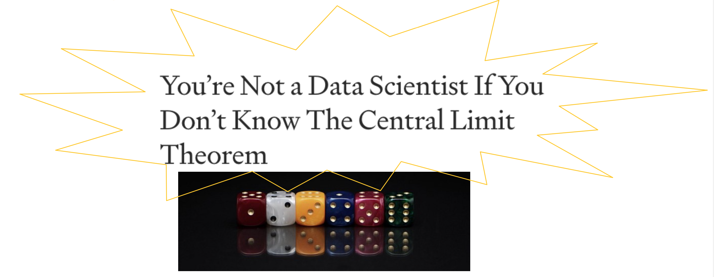
Visualization
Good Interactive Viz: https://seeing-theory.brown.edu/probability-distributions/index.html#section3
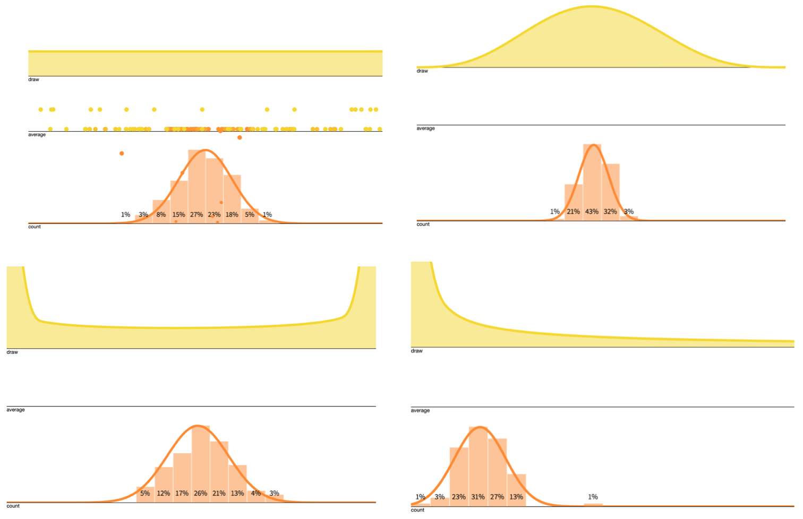
Statement
The central limit theorem states the distribution of sample means should be approximately normal.
Central Limit Theorem (Lindeberg and Lévy). If the random variables \(X_1, \ldots, X_n\) form a random sample of size \(n\) from a given distribution with mean \(\mu\) and variance \(\sigma^2\) \(\left(0<\sigma^2<\infty\right)\), then for each fixed number \(x\), \[ \lim _{n \rightarrow \infty} \operatorname{Pr}\left[\frac{\bar{X}_n-\mu}{\sigma / n^{1 / 2}} \leq x\right]=\Phi(x), \] where \(\Phi\) denotes the c.d.f. of the standard normal distribution.
CLT
Let \(S_n=\frac{1}{n} \sum_{j=1}^n X_j\) be the sample mean of the first \(n\) observations. For large \(n\) \[ \sqrt{n} \frac{S_n-\mu}{\sigma} \sim N(0,1) \quad \text { approximately } \] The distribution of \(\sqrt{n} \frac{S_n-\mu}{\sigma}\) is close to \(N(0,1)\) for large \(n\). Formally, \[ P\left(a \leq \sqrt{n} \frac{S_n-\mu}{\sigma} \leq b\right) \rightarrow P(a \leq Z \leq b) \] as \(n \rightarrow \infty\), for any \(a, b\), where \(Z \sim N(0,1)\). - Box plot, histograms, etc. all become closer and closer to the constant \(\mu\) and also become more bell-shaped. - \(\quad\) qqnorm() plots become straight lines. - \(\quad\) This is exact if the \(X_i\) already have normal distributions.
Extra Notes: Convergence in Distribution
- This is called convergence in distribution. We can say something about the probability distribution of the \(S_n\) as \(n\) becomes large.
- It’s not a statement about individual observations.
- But it is a stronger (more precise) statement that the Law of Large Numbers.
CLT
- The sampling distribution of the sample means approaches a normal distribution as the sample size gets larger - no matter what the shape of the population distribution.
- If you sample batches of data from any distribution and take the mean of each batch. Then the distribution of the means is going to resemble a Gaussian distribution. (Same goes for taking the sum)
Example
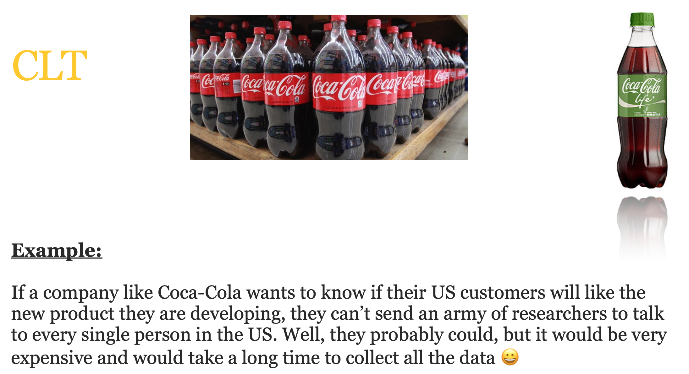
CLT
- No matter what is the population distribution is, by CLT for large samples, sample mean will follow a normal distribution.
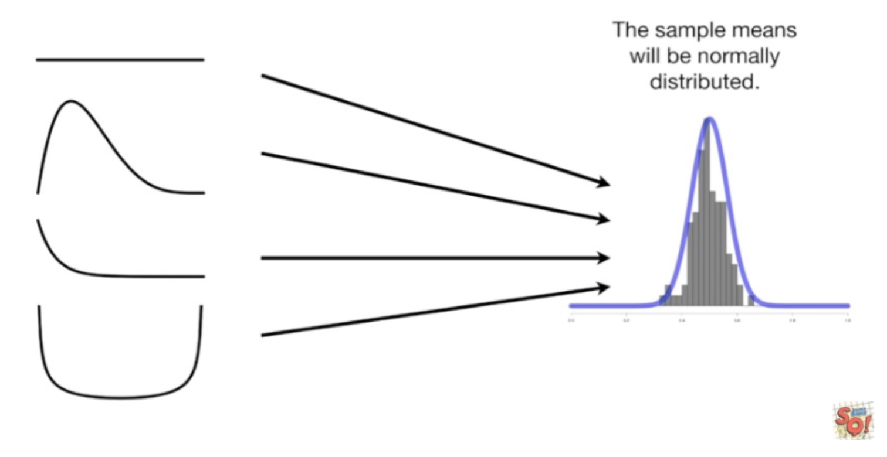
CLT Applications
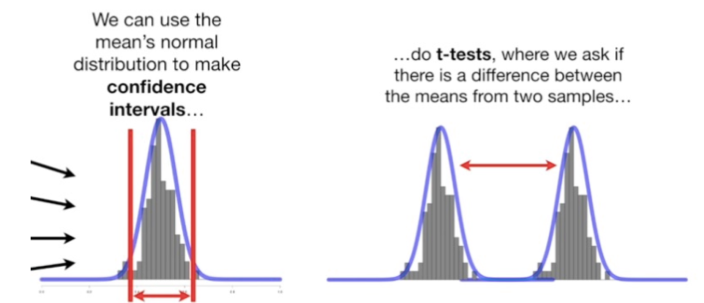
Motivating example
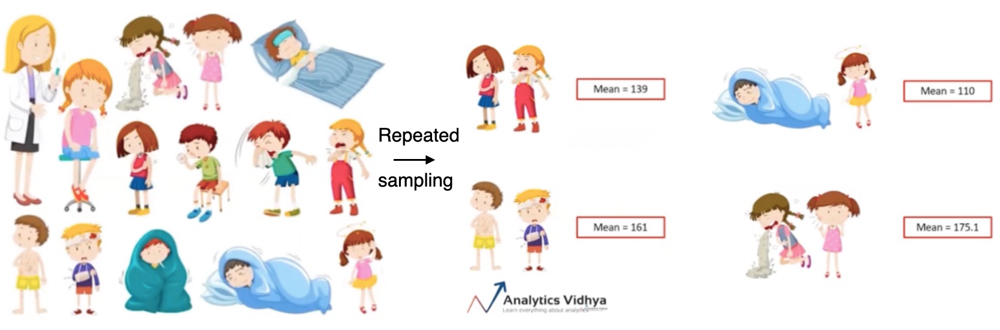
Example
- Possible samples and sample means of samples of size 2
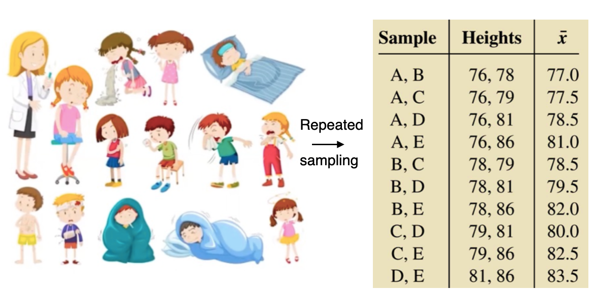
Summary
We all understand intuitively that the average of many measurements of the same unknown quantity tends to give a better estimate than a single measurement. Intuitively, this is because the random error of each measurement cancels out in the average. In these notes we will make this intuition precise in two ways: the law of large numbers (LoLN) and the central limit theorem (CLT).
Briefly, both the law of large numbers and central limit theorem are about many independent samples from same distribution. The LoLN tells us two things: 1. The average of many independent samples is (with high probability) close to the mean of the underlying distribution. 2. This density histogram of many independent samples is (with high probability) close to the graph of the density of the underlying distribution.
- LoLN: As \(n\) grows, the probability that \(X_n\) is close to \(\mu\) goes to 1 .
- CLT: As \(n\) grows, the distribution of \(\bar{X}_n\) converges to the normal distribution \(N\left(\mu, \sigma^2 / n\right)\). Before giving a more formal statement of the LoLN, let’s unpack its meaning through a concrete example (we’ll return to the CLT later on).
Sample
- A good sample must be….
- Representative of the population,
- Big enough to draw conclusions from, which in statistics is a sample size greater or equal to 30 .
- Picked at random, so you’re not biased towards certain characteristics in the population.
- Also number of samples taken should represent the Population.
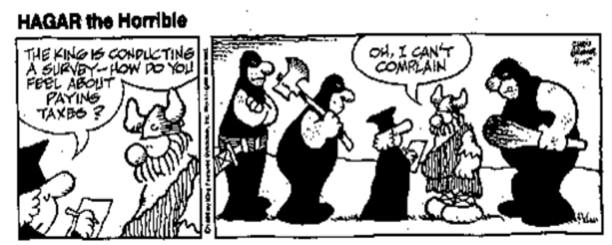
Sums of Normally Distributed Random Variables
Suppose \(X_1, X_2\) are independent and \(X_1 \sim N\left(\mu_1, \sigma_1^2\right), X_2 \sim N\left(\mu_2, \sigma_2^2\right)\). Then \[ X_1+X_2 \sim N\left(\mu_1+\mu_2, \sigma_1^2+\sigma_2^2\right) \] l.e. \(\operatorname{Var}\left(X_1+X_2\right)=\sigma_1^2+\sigma_2^2\).
This generalizes to sums of several independent normally distributed random variable.
Suppose \(X_1, \ldots, X_n\) are identically \(N\left(\mu . \sigma^2\right)\) distributed. Then
\[ \begin{aligned} \frac{X_j-\mu}{\sigma} & \sim N(0,1) \\ \sum_{j=1}^n X_j & \sim N\left(n \mu, n \sigma^2\right) \\ S_n & \sim N\left(\mu, \frac{\sigma^2}{n}\right) \\ \sqrt{n} \frac{S_n-\mu}{\sigma} & \sim N(0,1) \end{aligned} \]
Example-1
SAT Math scores of a group of Science & Engineering majors had a normal distribution with mean 609 and SD 80. We will randomly select \(\mathbf{1 0}\) students from these majors.
- What is the sampling distribution of the sample average?
Since the population has a Normal distribution and we took a simple random sample, \(\bar{y}\) has a normal distribution (regardless of the sample size).
- Shape: normal
- Mean: \(\mu=609\)
- SD: \(\sigma_{\bar{y}}=\frac{\sigma}{\sqrt{n}}=\frac{80}{\sqrt{10}}=25.298\)
- How often would this average be more than 630 ?
\[ \begin{gathered} z=\frac{\bar{y}-\mu}{\sigma / \sqrt{n}}=\frac{630-609}{25.298}=0.83 \\ P(Z>0.83)=1-0.7967=0.2033 \end{gathered} \]
Example-2
Let \(X_1, X_2, \ldots, X_9 \sim \operatorname{iidN}\left(7,3^2\right)\) and let \(Y_1, Y_2, \ldots, Y_{12} \sim \operatorname{iidN}\left(10,5^2\right)\). Let \(W=\bar{X}-\bar{Y}\) be the difference of the sample means. This is similar to the homework problem but not the same. I. Find the exact sampling distribution of \(W\) approximately. Solution \(\bar{X}\) has a mean 7 and variance \(9 / 9=1\). \(\bar{Y}\) has a mean 10 and variance \(25 / 12=\). By the CLT (Which applies already for normal distribution) we have a normal distribution. Therefore \(W\) has a normal distribution with mean \(\mu=7-10=-3, \sigma^2=1+25 / 12\)
Estimation
Statistical Inference
- What would we say is the probability that a future patient will respond successfully to treatment after we observe the results from a collection of other patients?
- This is the kind of question that statistical inference is designed to address.
- In general, statistical inference consists of making probabilistic statements about unknown quantities.
- For example, we can compute means, variances, quantiles, probabilities, and some other quantities yet to be introduced concerning unobserved random variables and unknown parameters of distributions.
- Our goal will be to say what we have learned about the unknown quantities after observing some data that we believe contain relevant information.
Statistical Inference
Here are some other examples of questions that statistical inference can try to answer.
- What can we say about whether a machine is functioning properly after we observe some of its output?
- In a civil lawsuit, what can we say about whether there was discrimination after observing how different ethnic groups were treated?
The methods of statistical inference, which we shall develop to address these questions, are built upon the theory of probability covered in the earlier chapters of this text.
Definition
Statistical Inference. A statistical inference is a procedure that produces a probabilistic statement about some or all parts of a statistical model.
By a “probabilistic statement” we mean a statement that makes use of any of the concepts of probability theory that were discussed earlier in the text or are yet to be discussed later in the text. Some examples include a mean, a conditional mean, a quantile, a variance, a conditional distribution for a random variable given another, the probability of an event, a conditional probability of an event given something, and so on. In Example 7.1.1, here are some examples of statistical inferences that one might wish to make: - Produce a random variable \(Y\) (a function of \(\left.X_1, \ldots, X_m\right)\) such that \(\operatorname{Pr}(Y \geq\) \(\theta \mid \theta)=0.9\). - Produce a random variable \(Y\) that we expect to be close to \(\theta\). - Compute how likely it is that the average of the next 10 lifetimes, \(\frac{1}{10} \sum_{i=m+1}^{m+10} X_i\), is at least 2. - Say something about how confident we are that \(\theta \leq 0.4\) after observing \(X_1, \ldots\), \(X_m\).
All of these types of inference and others will be discussed in more detail later in this book.
Statistical Decision Problems
In many statistical inference problems, after the experimental data have been analyzed, we must choose a decision from some available class of decisions with the property that the consequences of each available decision depend on the unknown value of some parameter. - For example, we might have to estimate the unknown failure rate \(\theta\) of our electronic components when the consequences depend on how close our estimate is to the correct value \(\theta\). - As another example, we might have to decide whether the unknown proportion \(P\) of patients in the imipramine group (Example 7.1.3) is larger or smaller than some specified constant when the consequences depend on where \(P\) lies relative to the constant. - This last type of inference is closely related to hypothesis testing, the subject of Chapter 9.
Experimental Design
In some statistical inference problems, we have some control over the type or the amount of experimental data that will be collected. - For example, consider an experiment to determine the mean tensile strength of a certain type of alloy as a function of the pressure and temperature at which the alloy is produced. - Within the limits of certain budgetary and time constraints, it may be possible for the experimenter to choose the levels of pressure and temperature at which experimental specimens of the alloy are to be produced, and also to specify the number of specimens to be produced at each of these levels. - Such a problem, in which the experimenter can choose (at least to some extent) the particular experiment that is to be carried out, is called a problem of experimental design. - Of course, the design of an experiment and the statistical analysis of the experimental data are closely related. - One cannot design an effective experiment without considering the subsequent statistical analysis that is to be carried out on the data that will be obtained. - And one cannot carry out a meaningful statistical analysis of experimental data without considering the particular type of experiment from which the data were derived.
Other Inferences
- The general classes of problems described above, as well as the more specific examples that appeared earlier, are intended as illustrations of types of statistical inferences that we will be able to perform with the theory and methods introduced in this text.
- The range of possible models, inferences, and methods that can arise when data are observed in real research problems far exceeds what we can introduce here.
- It is hoped that gaining an understanding of the problems that we can cover here will give you an appreciation for what needs to be done when a more challenging statistical problem arises.
Statistical Model
Statistical Model. A statistical model consists of an identification of random variables of interest (both observable and only hypothetically observable), a specification of a joint distribution or a family of possible joint distributions for the observable random variables, the identification of any parameters of those distributions that are assumed unknown and possibly hypothetically observable, and (if desired) a specification for a (joint) distribution for the unknown parameter(s). When we treat the unknown parameter(s) \(\theta\) as random, then the joint distribution of the observable random variables indexed by \(\theta\) is understood as the conditional distribution of the observable random variables given \(\theta\).
Source: DeGroot and Schervish, Definition 7.1.1
Parameter/Parameter space
Parameter/Parameter space. In a problem of statistical inference, a characteristic or combination of characteristics that determine the joint distribution for the random variables of interest is called a parameter of the distribution. The set \(\Omega\) of all possible values of a parameter \(\theta\) or of a vector of parameters \(\left(\theta_1, \ldots, \theta_k\right)\) is called the parameter space.
All of the families of distributions introduced earlier (and to be introduced later) in this book have parameters that are included in the names of the individual members of the family. For example, the family of binomial distributions has parameters that we called \(n\) and \(p\), the family of normal distributions is parameterized by the mean \(\mu\) and variance \(\sigma^2\) of each distribution, the family of uniform distributions on intervals is parameterized by the endpoints of the intervals, the family of exponential distributions is parameterized by the rate parameter \(\theta\), and so on.
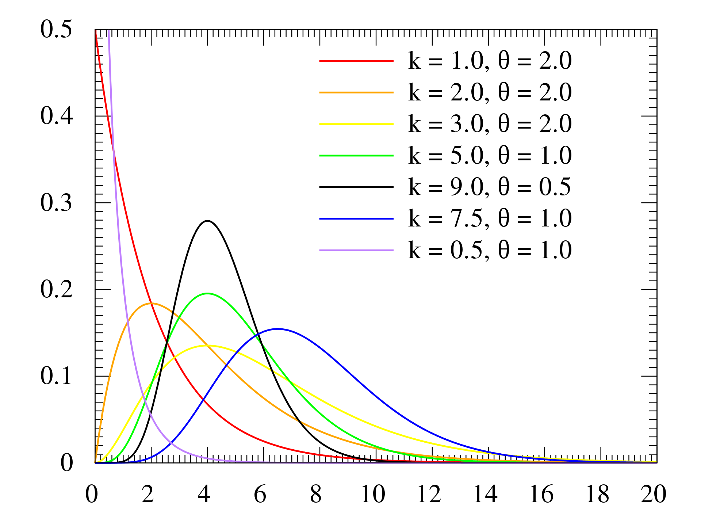
Source: DeGroot and Schervish, Definition 7.1.3
Example
A Clinical Trial. Suppose that 40 patients are going to be given a treatment for a condition and that we will observe for each patient whether or not they recover from the condition. We are most likely also intersted in a large collection of additional patients besides the 40 to be observed. To be specific, for each patient \(i=1,2\), let \(X_i=1\) if patient \(i\) recovers, and let \(X_i=0\) if not. As a collection of possible distributions for \(X_1, X_2, \ldots\), we could choose to say that the \(X_i\) are i.i.d. having the Bernoulli distribution with parameter \(p\) for \(0 \leq p \leq 1\). In this case, the parameter \(p\) is known to lie in the closed interval \([0,1]\), and this interval could be taken as the parameter space. Notice also that the law of large numbers (Theorem 6.2.4) says that \(p\) is the limit as \(n\) goes to infinity of the proportion of the first \(n\) patients who recover.
Statistic
Statistic. Suppose that the observable random variables of interest are \(X_1, \ldots, X_n\). Let \(r\) be an arbitrary real-valued function of \(n\) real variables. Then the random variable \(T=r\left(X_1, \ldots, X_n\right)\) is called a statistic.
Source: DeGroot and Schervish, Definition 7.1.4
Maximum Likelihood Estimation (MLE)
Overview
- Objective: Estimate parameters that maximize the likelihood of observed data.
- Assumption: Data follows a certain distribution.
- Process: Find parameter values that make the observed data most probable.
- Method: Maximize the likelihood function.
- Properties: Asymptotically efficient and consistent.
- Output: Point estimates for model parameters.
Recall: Joint probability density function
Given a random variable \(X\) with probability mass / density function \(f(x \mid \theta)\), where \(\theta\) is some parameter.
Distribution of \(n\) independent observations \(X_1, \ldots, X_n\) : Joint pdf / pmf \[ f_{\text {joint }}\left(x_1, \ldots, x_n \mid \theta\right)=f\left(x_1 \mid \theta\right) \cdots f\left(x_n \mid \theta\right) \]
Probability Theory: Assume that \(\theta\) is given and the \(x_i\) are variables (have not yet been observed).
Example: Exponential distribution
Likelihood Function
Let the random variables \(X_1, \ldots, X_n\) form a random sample from a discrete distribution or a continuous distribution for which the p.f. or the p.d.f. is \(f(x \mid \theta)\), where the parameter \(\theta\) belongs to some parameter space \(\Omega\). Here, \(\theta\) can be either a real-valued parameter or a vector. For every observed vector \(\boldsymbol{x}=\left(x_1, \ldots, x_n\right)\) in the sample, the value of the joint p.f. or joint p.d.f. will, as usual, be denoted by \(f_n(\boldsymbol{x} \mid \theta)\). Because of its importance in this section, we repeat Definition 7.2.3.
Likelihood Function. When the joint p.d.f. or the joint p.f. \(f_n(\boldsymbol{x} \mid \theta)\) of the observations in a random sample is regarded as a function of \(\theta\) for given values of \(x_1, \ldots, x_n\), it is called the likelihood function.
Source: DeGroot and Schervish, Definition 7.5.1
Likelihood function
Given a random variable \(X\) with probability mass / density function \(f(x \mid \theta)\), where \(\theta\) is some parameter. Assume a sample of \(n\) independent observations \(X=x_1, \ldots, X=x_n\) is given. Likelihood function \[ L\left(\theta \mid x_1, \ldots, x_n\right)=f\left(x_1 \mid \theta\right) \cdots f\left(x_n \mid \theta\right) \] This is the same as the joint probability density/mass function. Assume now that the \(x_i\) are given (have been observed) and \(\theta\) is unknown.
Visualization
In statistics, the likelihood function has a very precise definition: \[ L(\theta \mid x)=P(x \mid \theta) \] The concept of likelihood plays a fundamental role in both Bayesian and frequentist statistics.
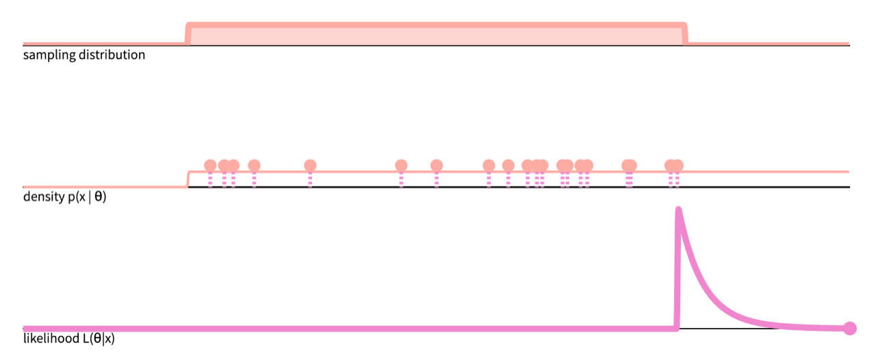
Good Interactive Viz:https://seeing-theory.brown.edu/bayesian-inference/index.html#section2
MLE
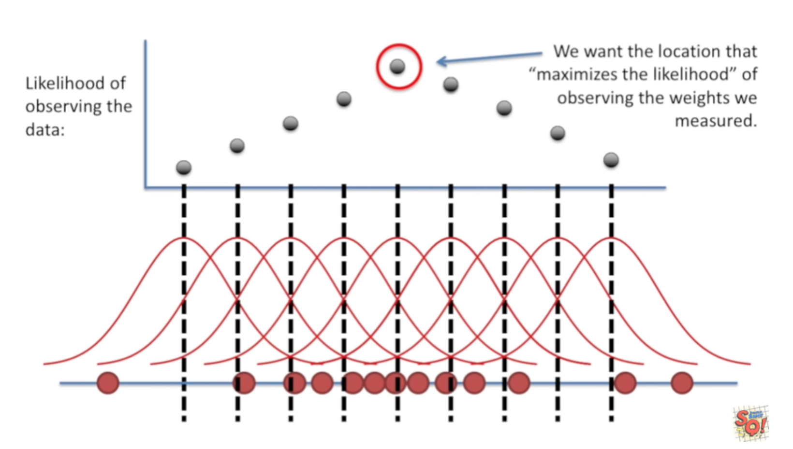
Example: Poisson distribution
Discrete distribution on \(\{0,1,2, \ldots\}\), parameter \(\lambda=\) intensity
The pmf is \(f(x \mid \lambda)=e^{-\lambda} \frac{\lambda^x}{x !}\) for \(x=0,1,2, \ldots\)
The joint pmf of \(n\) independent observations is \[ \begin{aligned} f_{\text {joint }}\left(x_1, \ldots, x_n \mid \lambda\right) & =e^{-n \lambda} \frac{\lambda^{x_1}}{x_{1} !} \ldots \frac{\lambda^{x_n}}{x_{n} !} \\ & =e^{-n \lambda} \frac{\lambda^{x_1+x_2+\cdots+x_n}}{x_{1} ! x_{2} ! \ldots x_{n} !} \\ & =L\left(\lambda \mid x_1, \ldots, x_n\right) \end{aligned} \]
This is also the likelihood function.
Three parts: \(e^{-n \lambda}\) depends only on \(\lambda\), the \(x_i\) ! depend only on the data, the term \(\lambda^{x_1+x_2+\cdots+x_n}\) depends both on \(\lambda\) and the data.
Example: Exponential distribution
- Continuous distribution on \([0, \infty)\), parameter \(\lambda=\) rate
- The pdf is \(f(x \mid \lambda)=\lambda e^{-\lambda x}\) for \(x \geq 0\)
- The joint pdf of \(n\) independent observations is
\[ \begin{aligned} f_{\text {joint }}\left(x_1, \ldots, x_n \mid \lambda\right) & =\lambda^n e^{-\lambda x_1} \ldots \lambda e^{-\lambda x_n} \\ & =\lambda^n e^{-\lambda x_1-\lambda x_2-\ldots \lambda x_n} \\ & =\lambda^n e^{-\lambda \sum_i x_i} \\ & =L\left(\lambda \mid x_1, \ldots, x_n\right) \end{aligned} \]
- This is also the likelihood function.
- Two parts: A term depending only on \(\lambda\) and another term depending on \(\lambda\) and the data, specifically \(\sum_i x_i\).
Calculation
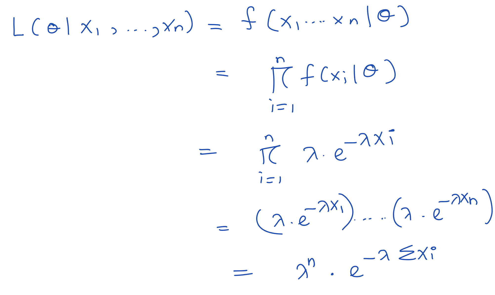
Example: Bernoulli distribution
Discrete distribution on \(\{0,1\}\), parameter \(p=\) success probability Pmf: \(f(x \mid p)=p^x(1-p)^{1-x}=\left\{\begin{array}{ll}1-p & (x=0) \\ p & (x=1)\end{array} \quad\right.\) for \(x=0,1\) The joint pmf of \(n\) independent observations is \[ \begin{aligned} f_{\text {joint }}\left(x_1, \ldots, x_n \mid p\right) & =\prod_{i=1}^n p^{x_i}(1-p)^{1-x_i} \\ & =p^{\sum_{i=1}^n x_i}(1-p)^{\sum_{i=1}^n\left(1-x_i\right)} \\ & =p^{\sum_i x_i}(1-p)^{n-\sum_i x_i} \\ & =(1-p)^n\left(\frac{p}{1-p}\right)^{\sum_i x_i}=L\left(p \mid x_1, \ldots, x_n\right) \end{aligned} \] This is also the likelihood function.
Exponential Families
In all these cases, the likelihood function for a sample \(\mathbf{x}=\left(x_1, \ldots, x_n\right)\) has two or three parts:
- a function \(g(\mathbf{x})\) that depends on the sample (could be 1)
- a function \(h(\theta)\) that depends on \(\theta\) but not on the sample
- a term that depends on the sample and on \(\theta\) that has a special exponential form.
These are examples of exponential families of distributions (well studied in statistics).
Example: Cauchy Distribution
Continuous distribution on \((-\infty, \infty)\), location parameter \(\theta\) The pdf is \(f(x \mid \theta)=\frac{1}{\pi\left((x-\theta)^2+1\right)}\) The joint pdf of \(n\) independent observations is \[ f_{\text {joint }}\left(x_1, \ldots, x_n \mid \theta\right)=\frac{1}{\pi^n} \prod_{i=1}^n \frac{1}{\left.\left(x_i-\theta\right)^2+1\right)} \] This is also the likelihood function. Not clear how to simplify this! This is not an exponential family.
Likelihood function
The part of the likelihood function that connects the data and the parameter often depends only on a statistic \(T(\mathbf{x})\). Exponential distribution: \[ L\left(\lambda \mid x_1, \ldots, x_n\right)=\lambda^n e^{-\lambda x_1-\lambda x_2 \cdots-\lambda x_n} \] depends only on \(T(\mathbf{x})=x_1+\cdots+x_n=n \bar{x}\). Poisson distribution: \[ L\left(\lambda \mid x_1, \ldots, x_n\right)=e^{-n \lambda} \frac{\lambda^{x_1+x_2+\cdots+x_n}}{x_{1} ! x_{2} ! \ldots x_{n} !} \] The term connecting the data and \(\lambda\) depends only on \(T(\mathbf{x})=x_1+\cdots+x_n\).
Likelihood function for normal distribution
Two parameters: Mean \(\mu\) and standard deviation \(\sigma\). Probability density: \[ f(x \mid \mu, \sigma)=\frac{1}{\sqrt{2 \pi} \sigma} e^{-\frac{(x-\mu)^2}{2 \sigma^2}} \] Likelihood function: \[ \begin{aligned} L\left(\mu, \sigma \mid x_1, \ldots, x_n\right) & =\frac{1}{(\sqrt{2 \pi})^n \sigma^n} \prod_{i=1}^n e^{-\frac{\left(x_i-\mu\right)^2}{2 \sigma^2}} \\ & =\frac{1}{(\sqrt{2 \pi})^n \sigma^n} e^{-\sum_{i=1}^n \frac{\left(x_i-\mu\right)^2}{2 \sigma^2}} \end{aligned} \] The data and the parameters \(\mu\) and \(\sigma\) are connected through \(T_1(\mathbf{x})=\sum_i x_i\) and \(T_2(\mathbf{x})=\sum_i x_i^2\).
Log Likelihood
- Take the logarithm of the likelihood function.
Poisson distribution \[ \log L=-n \lambda+\left(\sum_i x_i\right) \log \lambda-\sum_i \log x_{i} ! \] Exponential distribution \[ \log L=n \log \lambda-\lambda\left(\sum_i x_i\right) \] Bernoulli distribution \[ \log L=\log p\left(\sum_i x_i\right)+\log (1-p)\left(n-\sum_i x_i\right) \]
Calculation
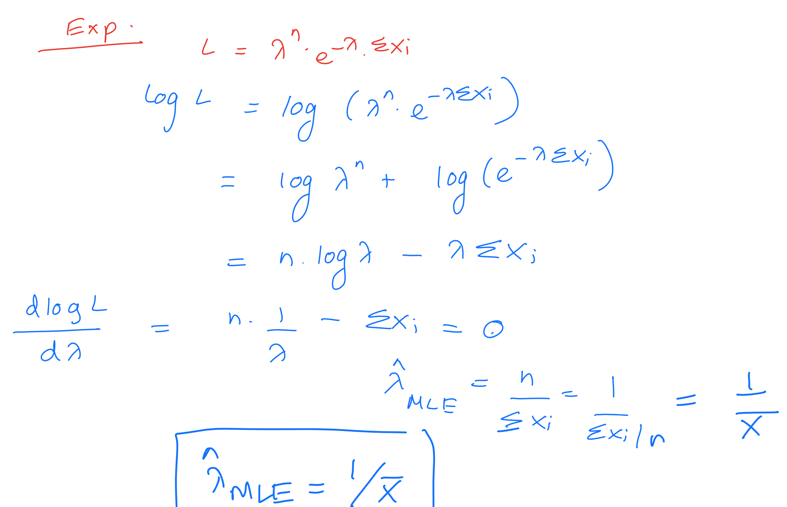
Maximum likelihood
We need to find a value of \(\theta\) for which the probability density \(f_n(\boldsymbol{x} \mid \theta)\) is large and to use this value as an estimate of \(\boldsymbol{\theta}\). For each possible observed vector \(x\), we are led by this reasoning to consider a value of \(\theta\) for which the likelihood function \(f_n(\boldsymbol{x} \mid \theta)\) is a maximum and to use this value as an estimate of \(\theta\). This concept is formalized in the following definition.
Maximum Likelihood Estimate
- Maximum Likelihood Estimator/Estimate. For each possible observed vector \(\boldsymbol{x}\), let \(\delta(\boldsymbol{x}) \in \Omega\) denote a value of \(\theta \in \Omega\) for which the likelihood function \(f_n(\boldsymbol{x} \mid \theta)\) is a maximum, and let \(\hat{\theta}=\delta(\boldsymbol{X})\) be the estimator of \(\theta\) defined in this way.
- The estimator \(\hat{\theta}\) is called a maximum likelihood estimator of \(\theta\). After \(\boldsymbol{X}=\boldsymbol{x}\) is observed, the value \(\delta(\boldsymbol{x})\) is called a maximum likelihood estimate of \(\theta\).
Source: DeGroot and Schervish, Definition 7.5.2
Arg-max function
- The argmax function identifies the argument that maximizes a given function.
- In mathematical terms, it finds the input value that yields the maximum output of the function.
- It is crucial for optimization problems and statistical estimation.
In mathematics, the arguments of the maxima (abbreviated arg max or argmax) are the points, or elements, of the domain of some function at which the function values are maximized.[note 1] In contrast to global maxima, which refers to the largest outputs of a function, arg max refers to the inputs, or arguments, at which the function outputs are as large as possible.
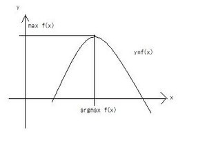
Maximum Likelihood
*Observe the graphs of the likelihood functions. Where are the maxima? Maximum Likelihood Estimation Estimate the unknown parameter \(\theta\) by using the maximum of the likelihood function, \[ \hat{\theta}_{M L E}=\operatorname{argmax}_\theta L\left(\theta \mid x_1, \ldots, x_n\right) \] Equivalently we can try to maximize the log likelihood. Use Optimization Theory to work out the maximum or to compute it numerically.
Example: Exponential Distribution
Given a sample of size \(n\) and \(\sum_i x_i\), the log likelihood is \[ \log L(\lambda)=n \log \lambda-\lambda \cdot \sum_i x_i=n \log \lambda-\lambda n \bar{x} \] Differentiate wrt. \(\lambda\) : \[ \frac{d}{d \lambda} \log L(\lambda)=\frac{n}{\lambda}-n \bar{x} \] Set this \(=0\) and solve for \(\lambda\). Calculus shows that this is the maximum, the maximum likelihood estimate of \(\lambda\). \[ \hat{\lambda}_{M L E}=\frac{1}{\bar{x}} \]
Examples of MLEs
- Poisson distribution: \(\hat{\lambda}_{M L E}=\bar{x}\)
- Exponential distribution: \(\hat{\lambda}_{M L E}=\frac{1}{\bar{x}}\)
- Bernoulli distribution: \(\hat{p}_{M L E}=\bar{x}\)
- Theoretical justification of intuitive choices
- Shows how to reduce data
- General method
Normal Distribution
Consider normal distribution \(N\left(\mu, \sigma^2\right)\). The likelihood function depends on two parameters, namely \(\mu\) and \(\sigma^2\). \[ \begin{aligned} L\left(\mu, \sigma \mid x_1, \ldots, x_n\right) & =\frac{1}{(\sqrt{2 \pi})^n \sigma^n} \prod_{i=1}^n e^{-\frac{\left(x_i-\mu\right)^2}{2 \sigma^2}} \\ & =\frac{1}{(\sqrt{2 \pi})^n \sigma^n} e^{-\sum_{i=1}^n \frac{\left(x_i-\mu\right)^2}{2 \sigma^2}} \end{aligned} \] Need calculus of several variables to minimize. Maximum likelihood estimates: \[ \hat{\mu}_{M L E}=\bar{x}, \quad \hat{\sigma}^2 M L E=\frac{1}{n} \sum_{i=1}^n\left(x_i-\bar{x}\right)^2 \]
Uniform Distribution
Consider uniform distribution on \((0, a)\) where \(a\) is unknown. Likelihood function depends on \(a\). \[ L\left(a \mid x_1, \ldots, x_n\right)= \begin{cases}\frac{1}{a^n} & \left(0 \leq x_1, x_2, \ldots, x_n \leq a\right) \\ 0 & \text { otherwise }\end{cases} \] Given a sample, we should pick the smallest a such that the first condition is true, since this will maximize the likelihood. Maximum likelihood estimates: \[ \hat{a}_{M L E}=\max _i x_i \] Does this make sense? This is always biased - why?
Example: Logistic Regression
12.2.1 Likelihood Function for Logistic Regression Because logistic regression predicts probabilities, rather than just classes, we can fit it using likelihood. For each training data-point, we have a vector of features, \(x_i\), and an observed class, \(y_i\). The probability of that class was either \(p\), if \(y_i=1\), or \(1-p\), if \(y_i=0\). The likelihood is then \[ L\left(\beta_0, \beta\right)=\prod_{i=1}^n p\left(x_i\right)^{y_i}\left(1-p\left(x_i\right)^{1-y_i}\right. \]
Reference: http://www.stat.cmu.edu/~cshalizi/uADA/12/lectures/ch12.pdf
Example: Logistic Regression
(I could substitute in the actual equation for \(p\), but things will be clearer in a moment if I don’t.) The log-likelihood turns products into sums: \[ \begin{aligned} \ell\left(\beta_0, \beta\right) & =\sum_{i=1}^n y_i \log p\left(x_i\right)+\left(1-y_i\right) \log 1-p\left(x_i\right) \\ & =\sum_{i=1}^n \log 1-p\left(x_i\right)+\sum_{i=1}^n y_i \log \frac{p\left(x_i\right)}{1-p\left(x_i\right)} \\ & =\sum_{i=1}^n \log 1-p\left(x_i\right)+\sum_{i=1}^n y_i\left(\beta_0+x_i \cdot \beta\right) \\ & =\sum_{i=1}^n-\log 1+e^{\beta_0+x_i \cdot \beta}+\sum_{i=1}^n y_i\left(\beta_0+x_i \cdot \beta\right) \end{aligned} \] where in the next-to-last step we finally use equation 12.4. Reference: http://www.stat.cmu.edu/ cshalizi/uADA/12/lectures/ch12.pdf
Example: Logistic Regression
Typically, to find the maximum likelihood estimates we’d differentiate the log likelihood with respect to the parameters, set the derivatives equal to zero, and solve. To start that, take the derivative with respect to one component of \(\beta\), say \(\beta_j\). \[ \begin{aligned} \frac{\partial \ell}{\partial \beta_j} & =-\sum_{i=1}^n \frac{1}{1+e^{\beta_0+x_i \cdot \beta}} e^{\beta_0+x_i \cdot \beta} x_{i j}+\sum_{i=1}^n y_i x_{i j} \\ & =\sum_{i=1}^n\left(y_i-p\left(x_i ; \beta_0, \beta\right)\right) x_{i j} \end{aligned} \] We are not going to be able to set this to zero and solve exactly. (That’s a transcendental equation, and there is no closed-form solution.) We can however approximately solve it numerically.
Notes
It should be noted that in some problems, for certain observed vectors \(\boldsymbol{x}\), the maximum value of \(f_n(\boldsymbol{x} \mid \theta)\) may not actually be attained for any point \(\theta \in \Omega\). In such a case, an M.L.E. of \(\theta\) does not exist. For certain other observed vectors \(\boldsymbol{x}\), the maximum value of \(f_n(\boldsymbol{x} \mid \theta)\) may actually be attained at more than one point in the space \(\Omega\). In such a case, the M.L.E. is not uniquely defined, and any one of these points can be chosen as the value of the estimator \(\hat{\theta}\). In many practical problems, however, the M.L.E. exists and is uniquely defined.
# Method of Moments (MOM)
Overview
- The method of moments is an intuitive method for estimating parameters when other, more attractive, methods may be too difficult
Method of Moments. Assume that \(X_1, \ldots, X_n\) form a random sample from a distribution that is indexed by a \(k\)-dimensional parameter \(\theta\) and that has at least \(k\) finite moments. For \(j=1, \ldots, k\), let \(\mu_j(\theta)=E\left(X_1^j \mid \theta\right)\). Suppose that the function \(\mu(\theta)=\left(\mu_1(\theta), \ldots, \mu_k(\theta)\right)\) is a one-to-one function of \(\theta\). Let \(M\left(\mu_1, \ldots, \mu_k\right)\) denote the inverse function, that is, for all \(\theta\), \[ \theta=M\left(\mu_1(\theta), \ldots, \mu_k(\theta)\right) \text {. } \] Define the sample moments by \(m_j=\frac{1}{n} \sum_{i=1}^n X_i^j\) for \(j=1, \ldots, k\). The method of moments estimator of \(\theta\) is \(M\left(m_1, \ldots, m_j\right)\).
The usual way of implementing the method of moments is to set up the \(k\) equations \(m_j=\mu_j(\theta)\) and then solve for \(\theta\).
Source: DeGroot and Schervish, Definition 7.6.3
Method of Moments Estimation
Given a random variable \(X\) whose distribution depends on a parameter \(\theta\). To estimate \(\theta\),
- Express a moment \(\mathcal{E}(X)\) or \(\mathcal{E}\left(X^2\right)\) or … in terms of \(\theta\), e.g. \(\mathcal{E}(X)=H(\theta)\)
- Estimate this moment from the sample
- Solve the equation relating the moment and the parameter, e.g. solve \(\bar{x}=H(\hat{\theta})\) for \(\hat{\theta}\).
Similar to a plug-in estimation
Avoids calculus or likelihood functions, only algebra is needed
Example: Uniform Distribution
Consider uniform distribution on \((0, a)\) where \(a\) is unknown. Then \(E(X)=\frac{a}{2}\). Given a sample, compute the sample mean. Then use the method of moments: \[ E(X)=\frac{a}{2} \text { becomes } \quad \bar{x}=\frac{\hat{a}}{2} \Rightarrow \hat{a}=2 \bar{x} \] Method of moments estimate: \[ \hat{a}_{M o M}=2 \bar{x} \] This is not biased. Does this make sense?
Example: Beta Distribution
Continuous distribution on \((0,1)\), parameters \(\alpha, \beta>0\) The pdf is \[ f(x \mid \alpha, \beta)=\frac{\Gamma(\alpha+\beta)}{\Gamma(\alpha) \Gamma(\beta)} x^{\alpha-1}(1-x)^{\beta-1} \] for \(0<x<1\) Likelihood function is complicated. Calculus minimization is challenging, due to \(\Gamma\) function.
Estimation using Method of Moments
Known for the beta distribution: \[ \mathcal{E}(X)=\frac{\alpha}{\alpha+\beta}, \quad \operatorname{var}(X)=\frac{\alpha \beta}{(\alpha+\beta)^2(\alpha+\beta+1)} \] This is equivalent to formulae for the moments \(\mathcal{E}(X)\) and \(\mathcal{E}\left(X^2\right)\), since \(\mathcal{E}\left(X^2\right)=\operatorname{var}(X)+\mathcal{E}(X)^2\).
MoM approach: Use sample mean \(\bar{x}\) and sample variance \(\bar{v}\). Solve the equations \[ \bar{x}=\frac{\alpha}{\alpha+\beta}, \quad \bar{v}=\frac{\alpha \beta}{(\alpha+\beta)^2(\alpha+\beta+1)} \]
Resulting Estimators
After some algebra … \[ \begin{aligned} & \hat{\alpha}=\bar{x}\left(\frac{\bar{x}(1-\bar{x})}{\bar{v}}-1\right) \\ & \hat{\beta}=(1-\bar{x})\left(\frac{\bar{x}(1-\bar{x})}{\bar{v}}-1\right) \end{aligned} \]
What if \(\bar{v}>\bar{x}(1-\bar{x})\) ? The estimates then are negative! R packages such as EnvStats uses a numerical method to maximize the likelihood.
Bias and Variance
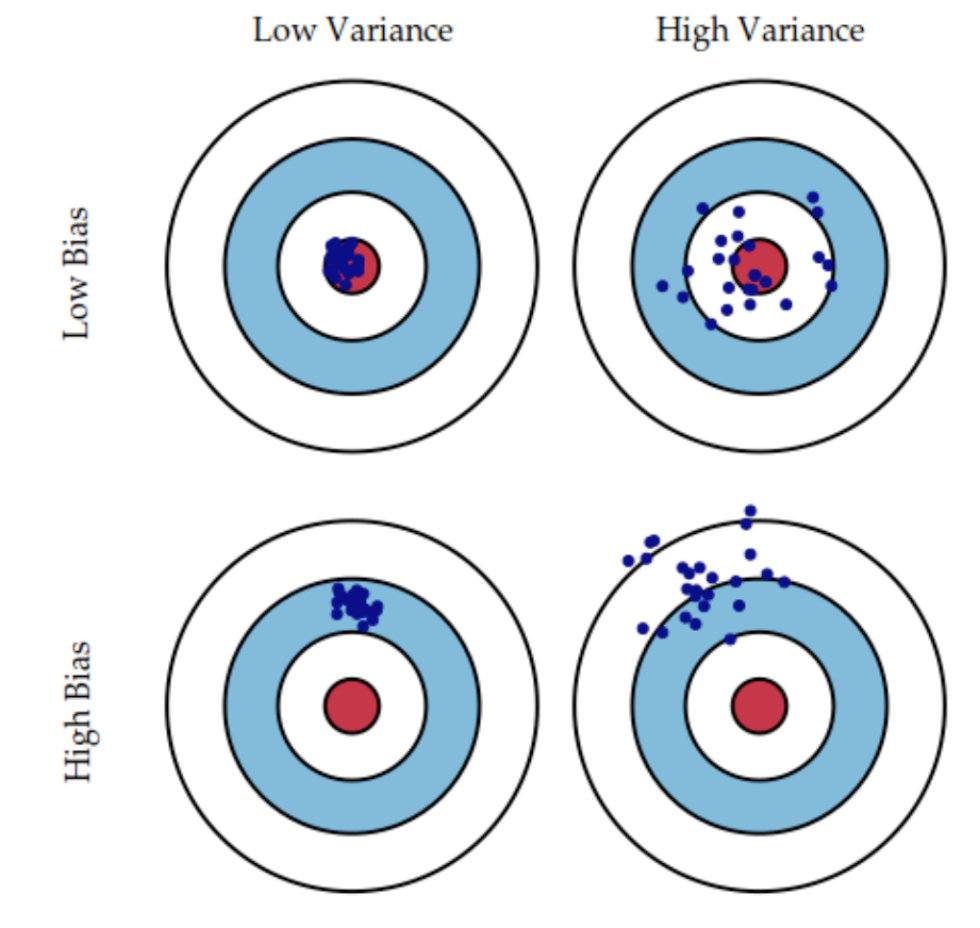
Bias and Variance
Bias is systematic error, variance is random error. Bias can sometimes be estimated and corrected, variance can only be estimated. Formal Definition Suppose \(\hat{\theta}\) is an estimator (based on a random sample) for \(\theta\). The bias is defined as \[ \operatorname{bias}(\hat{\theta})=\mathcal{E}(\hat{\theta})-\theta \] Theoretical evaluation and simulation approach may both be possible.
Unbiased Estimator
Let \(\delta\) be an estimator of a function \(g\) of a parameter \(\theta\). We say that \(\delta\) is unbiased if \(E_\theta[\delta(\boldsymbol{X})]=g(\theta)\) for all values of \(\theta\). This section provides several examples of unbiased estimators.
Let \(\boldsymbol{X}=\left(X_1, \ldots, X_n\right)\) be a random sample from a distribution that involves a parameter (or parameter vector) \(\theta\) whose value is unknown. Suppose that we wish to estimate a function \(g(\theta)\) of the parameter. In a problem of this type, it is desirable to use an estimator \(\delta(\boldsymbol{X})\) that, with high probability, will be close to \(g(\theta)\). In other words,
Unbiased Estimator
it is desirable to use an estimator \(\delta\) whose distribution changes with the value of \(\theta\) in such a way that no matter what the true value of \(\theta\) is, the probability distribution of \(\delta\) is concentrated around \(g(\theta)\). For example, suppose that \(\boldsymbol{X}=\left(X_1, \ldots, X_n\right)\) form a random sample from a normal distribution for which the mean \(\theta\) is unknown and the variance is 1 . In this case, the M.L.E. of \(\theta\) is the sample mean \(\bar{X}_n\). The estimator \(\bar{X}_n\) is a reasonably good estimator of \(\theta\) because its distribution is the normal distribution with mean \(\theta\) and variance \(1 / n\). This distribution is concentrated around the unknown value of \(\theta\), no matter how large or how small \(\theta\) is.
Unbiased Estimator
Unbiased Estimator/Bias. An estimator \(\delta(\boldsymbol{X})\) is an unbiased estimator of a function \(g(\theta)\) of the parameter \(\theta\) if \(E_\theta[\delta(\boldsymbol{X})]=g(\theta)\) for every possible value of \(\theta\). An estimator that is not unbiased is called a biased estimator. The difference between the expectation of an estimator and \(g(\theta)\) is called the bias of the estimator. That is, the bias of \(\delta\) as an estimator of \(g(\theta)\) is \(E_\theta[\delta(\boldsymbol{X})]-g(\theta)\), and \(\delta\) is unbiased if and only if the bias is 0 for all \(\theta\).
In the case of a sample from a normal distribution with unknown mean \(\theta, \bar{X}_n\) is an unbiased estimator of \(\theta\) because \(E_\theta\left(\bar{X}_n\right)=\theta\) for \(-\infty<\theta<\infty\)
Source: DeGroot and Schervish, Definition 8.7.1
Example: Poisson Distribution
The maximum likelihood estimator for \(\lambda\) is the sample mean, \(\hat{\lambda}=\bar{X}\). We know that \[ \mathcal{E}\left(X_i\right)=\lambda \Longrightarrow \mathcal{E}(\bar{X})=\lambda . \]
Therefore,
\[ \mathcal{E}(\hat{\lambda})-\lambda=0 \]
- This estimator is unbiased.
Exponential Distribution
The maximum likelihood estimator for \(\lambda\) is \(\hat{\lambda}=\frac{1}{\bar{\chi}}\). We know that \[ \mathcal{E}\left(X_i\right)=\frac{1}{\lambda} \Longrightarrow \mathcal{E}(\bar{X})=\frac{1}{\lambda} . \] But one can show that \[ \mathcal{E}(\hat{\lambda})=\mathcal{E}\left(\frac{1}{\bar{X}}\right)=\frac{n}{n-1} \lambda . \] Can also assess and correct the bias with a simulation (“parametric bootstrap”).
Calculation-1
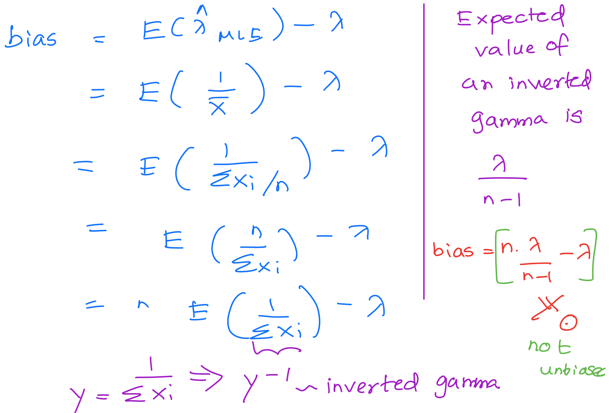
Calculation-2
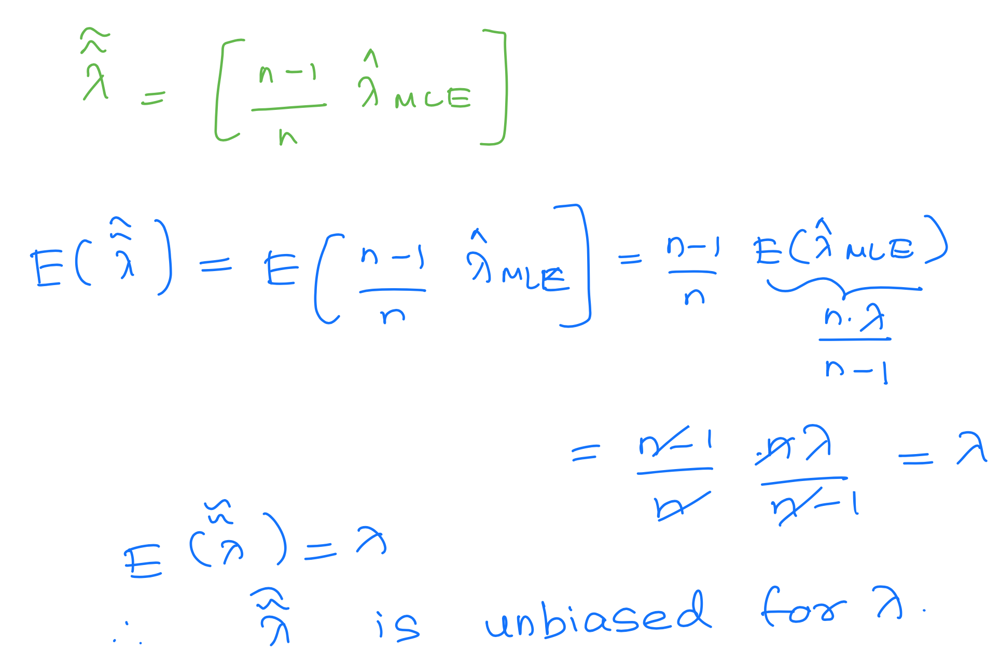
Unbiased Estimation of the Variance
Sampling from a General Distribution. Let \(\boldsymbol{X}=\left(X_1, \ldots, X_n\right)\) be a random sample from a distribution that depends on a parameter (or parameter vector) \(\theta\). Assume that the variance of the distribution is finite. Define \(g(\theta)=\operatorname{Var}_\theta\left(X_1\right)\). The following statistic is an unbiased estimator of the variance \(g(\theta)\) :
\[ \hat{\sigma}_1^2=\frac{1}{n-1} \sum_{i=1}^n\left(X_i-\bar{X}_n\right)^2 \]
Source: DeGroot and Schervish, Theorem 8.7.1
Example
Sampling from a Specific Family of Distributions When it can be assumed that \(X_1, \ldots, X_n\) form a random sample from a specific family of distributions, such as the family of Poisson distributions, it will generally be desirable to consider not only \(\hat{\sigma}_1^2\) but also other unbiased estimators of the variance.
Sample from a Poisson Distribution. Suppose that we observe a random sample from the Poisson distribution for which the mean \(\theta\) is unknown. We have already seen that \(\bar{X}_n\) will be an unbiased estimator of the mean \(\theta\). Moreover, since the variance of a Poisson distribution is also equal to \(\theta\), it follows that \(\bar{X}_n\) is also an unbiased estimator of the variance. In this example, therefore, both \(\bar{X}_n\) and \(\hat{\sigma}_1^2\) are unbiased estimators of the unknown variance \(\theta\). Furthermore, any combination of \(\bar{X}_n\) and \(\hat{\sigma}_1^2\) having the form \(\alpha \bar{X}_n+(1-\alpha) \hat{\sigma}_1^2\), where \(\alpha\) is a given constant \((-\infty<\alpha<\infty)\), will also be an unbiased estimator of \(\theta\) because its expectation will be \[ E\left[\alpha \bar{X}_n+(1-\alpha) \hat{\sigma}_1^2\right]=\alpha E\left(\bar{X}_n\right)+(1-\alpha) E\left(\hat{\sigma}_1^2\right)=\alpha \theta+(1-\alpha) \theta=\theta \] Other unbiased estimators of \(\theta\) can also be constructed.
Mean Square Error
Combine variance and bias to assess quality of an estimator: MSE
For an estimator \(\hat{\theta}\), \[ \operatorname{MSE}(\hat{\theta})=\mathcal{E}\left((\hat{\theta}-\theta)^2\right)=\operatorname{var}(\hat{\theta})+\operatorname{bias}(\hat{\theta})^2 \]
MSE
Proposition 6.4 MSE \([\hat{\theta}]=\operatorname{Var}[\hat{\theta}]+\operatorname{Bias}[\hat{\theta}]^2\). Proof \[ \begin{aligned} \operatorname{MSE}[\hat{\theta}] & =\mathrm{E}\left[(\hat{\theta}-\theta)^2\right] \\ & =\mathrm{E}\left[(\hat{\theta}-\mathrm{E}[\hat{\theta}]+\mathrm{E}[\hat{\theta}]-\theta)^2\right] \\ & =\mathrm{E}\left[((\hat{\theta}-\mathrm{E}[\hat{\theta}])+(\mathrm{E}[\hat{\theta}]-\theta))^2\right] \\ & =\mathrm{E}\left[(\hat{\theta}-\mathrm{E}[\hat{\theta}])^2\right]+2 \mathrm{E}[\hat{\theta}-\mathrm{E}[\hat{\theta}]](\mathrm{E}[\hat{\theta}]-\theta)+(\mathrm{E}[\hat{\theta}]-\theta)^2 \\ & =\operatorname{Var}[\hat{\theta}]+(\operatorname{Bias}[\hat{\theta}])^2 \end{aligned} \] Also, if \(\hat{\theta}\) is unbiased, then \(\operatorname{MSE}[\theta]=\operatorname{Var}[\hat{\theta}]\). So, the unbiased estimator \(\hat{\theta}_1\) of \(\theta\) is more efficient than the unbiased estimator \(\hat{\theta}_2\) if and only if \(\operatorname{MSE}\left[\hat{\theta}_1\right]<\operatorname{MSE}\left[\hat{\theta}_2\right]\).
MSE
Definition. Let \(T\) be an estimator for a parameter \(\theta\). The mean squared error of \(T\) is the number \(\operatorname{MSE}(T)=\mathrm{E}\left[(T-\theta)^2\right]\). According to this criterion, an estimator \(T_1\) performs better than an estimator \(T_2\) if \(\operatorname{MSE}\left(T_1\right)<\operatorname{MSE}\left(T_2\right)\). Note that \[ \begin{aligned} \operatorname{MSE}(T) & =\mathrm{E}\left[(T-\theta)^2\right] \\ & =\mathrm{E}\left[(T-\mathrm{E}[T]+\mathrm{E}[T]-\theta)^2\right] \\ & =\mathrm{E}\left[(T-\mathrm{E}[T])^2\right]+2 \mathrm{E}[T-\mathrm{E}[T]](\mathrm{E}[T]-\theta)+(\mathrm{E}[T]-\theta)^2 \\ & =\operatorname{Var}(T)+(\mathrm{E}[T]-\theta)^2 . \end{aligned} \]
Efficiency
EFFICIENCY. Let \(T_1\) and \(T_2\) be two unbiased estimators for the same parameter \(\theta\). Then estimator \(T_2\) is called more efficient than estimator \(T_1\) if \(\operatorname{Var}\left(T_2\right)<\operatorname{Var}\left(T_1\right)\), irrespective of the value of \(\theta\).
Note
So the MSE of \(T\) turns out to be the variance of \(T\) plus the square of the bias of \(T\). In particular, when \(T\) is unbiased, the MSE of \(T\) is just the variance of \(T\). This means that we already used mean squared errors to compare the estimators \(T_1\) and \(T_2\) in the previous section. We extend the notion of efficiency by saying that estimator \(T_2\) is more efficient than estimator \(T_1\) (for the same parameter of interest), if the MSE of \(T_2\) is smaller than the MSE of \(T_1\).
Efficiency
Given two estimators \(\hat{\theta}_1, \hat{\theta}_2\) for the same parameter. If both are unbiased, the one with smaller variance is better (“more efficient”).
Relative Efficiency of \(\hat{\theta}_1\) wrt. \(\hat{\theta}_2\)
Assuming \(\mathcal{E}\left(\hat{\theta}_1\right)=\mathcal{E}\left(\hat{\theta}_2\right)=\theta\), this is defined as \[ E=\operatorname{var}\left(\hat{\theta}_2\right) / \operatorname{var}\left(\hat{\theta}_1\right) \]
If \(\hat{\theta}_2\) is used instead of \(\hat{\theta}_1\), the sample size must be increased by a factor \(E\) to get the same accuracy.
Example: Mean and Median
Consider data from a normal distribution, \(N(\mu, 1)\). Can estimate \(\mu\) in two ways from a sample \(x=\left(x_1, \ldots, x_n\right)\) : \[ \hat{\mu}_1=\bar{x}, \quad \hat{\mu}_2=\operatorname{median}(x) \]
What is the relative efficiency?
Example
Exercise 6.4 #28 in Chihara/Hesterberg. 28. Let \(\hat{\theta}_1\) and \(\hat{\theta}_2\) be two estimators of \(\theta\) with \(\mathrm{E}\left[\hat{\theta}_1\right]=0.9 \theta\) and \(\mathrm{E}\left[\hat{\theta}_2\right]=1.2 \theta\). Also, suppose \(\operatorname{Var}\left[\hat{\theta}_1\right]=3\) and \(\operatorname{Var}\left[\hat{\theta}_2\right]=2\). Find two unbiased estimators of \(\theta\) and determine which one is more efficient. Solution Set \(\tilde{\theta}_1=\frac{\hat{\theta}_1}{0.9}\) and \(\tilde{\theta}_2=\frac{\hat{\theta}_2}{1.2}\). Then \(E\left(\tilde{\theta}_1\right)=\frac{0.9}{0.9} \theta=\theta\) and similarly \(E\left(\tilde{\theta}_2\right)=\theta\), so both are unbiased. Also, \(\operatorname{Var}\left(\tilde{\theta}_1\right)=\frac{3}{0.9^2} \approx 3.76\) and \(\operatorname{Var}\left(\tilde{\theta}_2\right)=\frac{2}{1.2^2} \approx 1.39\), so \(\tilde{\theta}_2\) is more efficient.
Calculation
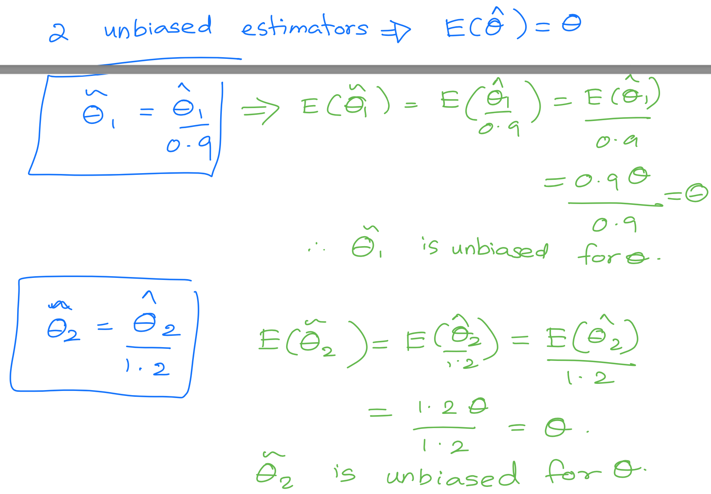
Bias-Variance Trade Off - a look ahead
Consider \(M S E^2=\) bias \(^2+\) var . More complex models (with more parameters) tend to have less bias (are more flexible) and more variance (are more susceptible to noise).
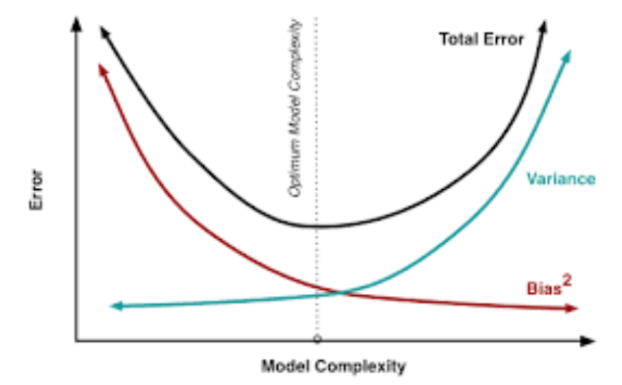